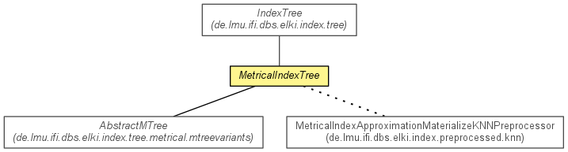

de.lmu.ifi.dbs.elki.index.tree.metrical
Class MetricalIndexTree<O,D extends Distance<D>,N extends Node<E>,E extends Entry>
java.lang.Object
 de.lmu.ifi.dbs.elki.index.tree.IndexTree<N,E>
de.lmu.ifi.dbs.elki.index.tree.metrical.MetricalIndexTree<O,D,N,E>
de.lmu.ifi.dbs.elki.index.tree.IndexTree<N,E>
de.lmu.ifi.dbs.elki.index.tree.metrical.MetricalIndexTree<O,D,N,E>
- Type Parameters:
O - the type of objects stored in the indexD - the type of Distance used in the metrical indexN - the type of nodes used in the metrical indexE - the type of entries used in the metrical index
- Direct Known Subclasses:
- AbstractMTree
public abstract class MetricalIndexTree<O,D extends Distance<D>,N extends Node<E>,E extends Entry>
- extends IndexTree<N,E>

Abstract super class for all metrical index classes.
| Methods inherited from class de.lmu.ifi.dbs.elki.index.tree.IndexTree |
createEmptyRoot, createHeader, createNewDirectoryNode, createNewLeafNode, createRootEntry, deleteNode, getFile, getLogger, getNode, getNode, getPageFileStatistics, getPageID, getPageSize, getRoot, getRootEntry, getRootID, getRootPath, initialize, initialize, initializeCapacities, initializeFromFile, isRoot, postDelete, preInsert, writeNode |
| Methods inherited from class java.lang.Object |
clone, equals, finalize, getClass, hashCode, notify, notifyAll, toString, wait, wait, wait |
MetricalIndexTree
public MetricalIndexTree(PageFile<N> pagefile)
- Constructor.
- Parameters:
pagefile - Page file
getDistanceFunction
public abstract DistanceFunction<? super O,D> getDistanceFunction()
- Returns the distance function of this metrical index.
- Returns:
- the distance function of this metrical index
getDistanceQuery
public abstract DistanceQuery<O,D> getDistanceQuery()
- Returns the distance function of this metrical index.
- Returns:
- the distance function of this metrical index
getLeaves
public abstract List<E> getLeaves()
- Returns a list of entries pointing to the leaf nodes of this spatial index.
- Returns:
- a list of entries pointing to the leaf nodes of this spatial index